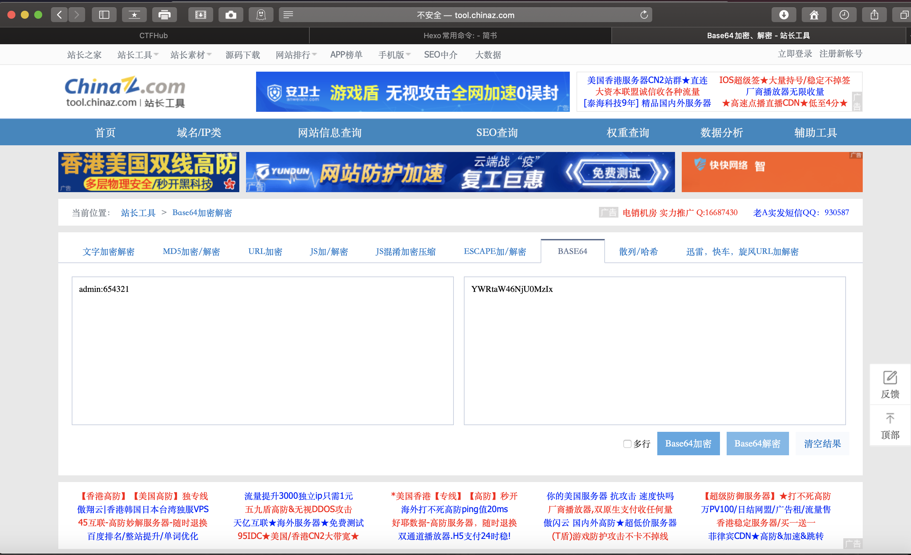
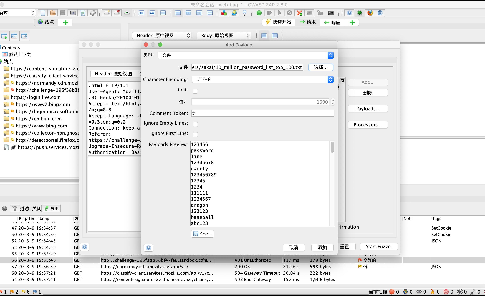
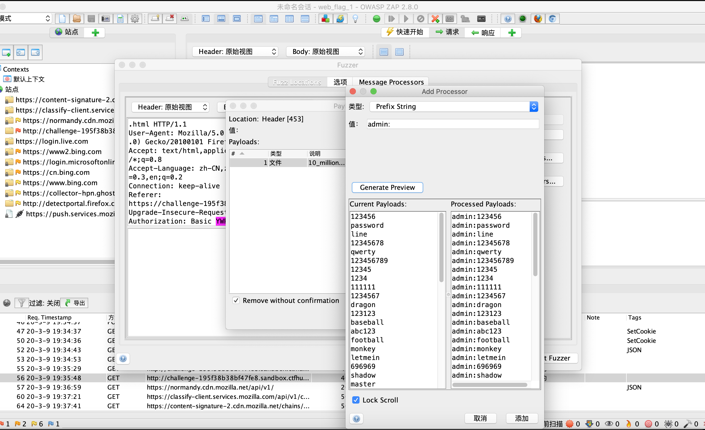
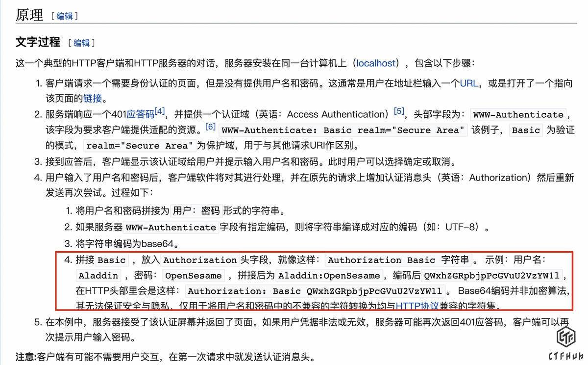

本题就是简单的爆破,但是它帮助我更会使用Owasp Zap这个开源渗透工具。
题目考点
· HTTP 基础认证
· 脚本编写
· 爆破
解题思路
一个登录界面就这么赤裸裸的展现在你面前,而且这么靠前,他不可能有防爆破的技术的! 所以爆破嘛。当然, 在实际渗透测试中一定要最后爆破, 不能心急, 这是血的教训啊!
解题过程
1> 方法一
访问 /flag 发现需要登录
所以果断挂上zap代理, 准备看看怎么发的包, 伺机爆破!!! 账户名藏在题干里了, 一看就是admin, 密码随便写一个
emmmmm, 这内容一看就是base64嘛!!!

果断Fuzz
payloads选附件里的字典

然后怎么营造合适的payloads呢?
ok, 就是Processors选项, 选好前缀prefix, 以及base64 encode;

Now, start fuzzing!
寻找谁是200的状态码, 就是爆破结果，得到的响应内容就是flag
2> 方法二
Copy 一个叫wuj1n9的人
先来一下Http基本认证的原理

接下来不同的就是用了爆破脚本, payloads是用脚本生成
脚本如下
1 | #!/usr/bin/env python3 |
然后爆破就得出结果